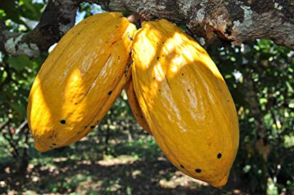
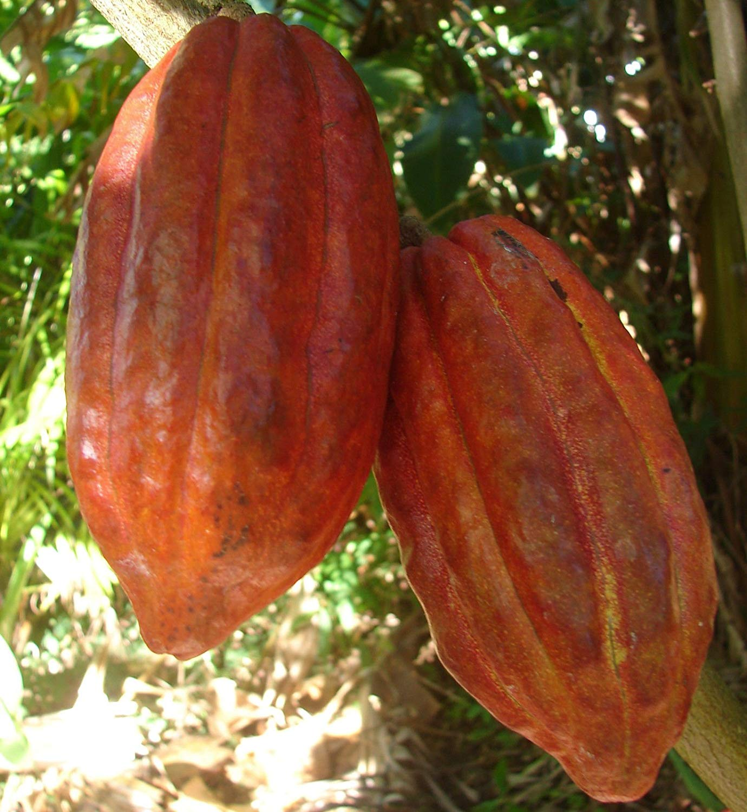
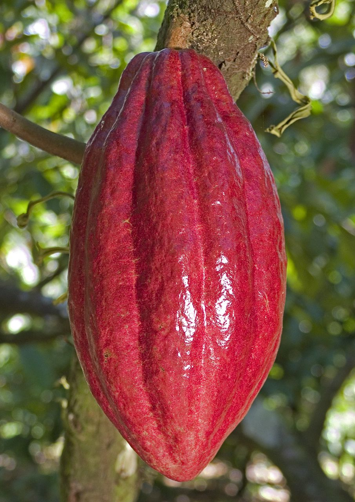
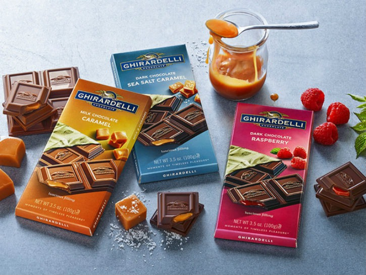

3%
最珍貴的可可豆
80% up
市面上最普遍的可可豆
5-10%
混合CRIOLLO 與 FORASTERO 的品種



在西班牙文裡，CRIOLLO的意思是"原生"。可可豆有偏低的巧克力味；而偏多的則是果香及堅果味。主要產地有: 委內瑞拉、馬達加斯加、斯里蘭卡及中美洲等。
市占率最高的可可豆是FORASTERO，在西班牙文中是"外來"的意思。果實的顏色多為紫紅色。主要種植在西非洲地區。
TRINTARIO則是CRIOLLO及FORASTERO的混合種。西班牙殖民於千里達島有栽種大量的CRIOLLO可可樹種，之後有人從亞馬遜帶不同的可可樹種來栽種。跟存活下來的CRIOLLO可可樹做混交種，而千里達島的可可樹也有大量的移植到非洲去栽種，所以來自千里達島的可可豆就稱TRINTARIO。

Hershey的巧克力產品很多，如 Hershey's Kisses, Hershey's chocolate bars, Reese's Peanut Butter Cups, Reese's Pieces, York Peppermint Patties等都是Hershey的產品。
甚至，Hershey's在美國賓夕法尼亞州擁有自己的小鎮，人們可以參觀Hershey的巧克力世界，享受獨一無二的體驗。